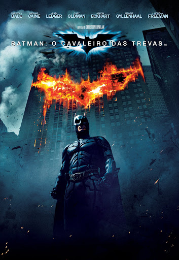
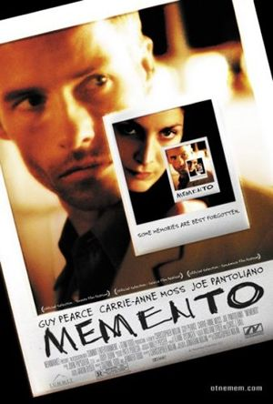

Sinopse: Dom Cobb é um ladrão com a rara habilidade de roubar segredos do inconsciente, obtidos
durante o estado
de sono. Impedido de retornar para sua família, ele recebe a oportunidade de se redimir ao realizar uma
tarefa
aparentemente impossível: plantar uma ideia na mente do herdeiro de um império. Para realizar o crime
perfeito,
ele conta com a ajuda do parceiro Arthur, o discreto Eames e a arquiteta de sonhos Ariadne. Juntos, eles
correm
para que o inimigo não antecipe seus passos.
Trailer
2 lugar: Batman: O Cavaleiro das Trevas(2008)

Sinopse: Com a ajuda de Jim Gordon e Harvey Dent, Batman tem mantido a ordem na cidade de
Gotham. Mas um jovem e
anárquico criminoso conhecido como Coringa ganha força e decide instaurar um verdadeiro caos na cidade. O
justiceiro será testado psicologicamente e fisicamente como nunca fora antes em um confronto bastante
pessoal.
Cabe a Batman encontrar uma maneira de deter o sádico vilão antes que mais vidas sejam perdidas.
Trailer
1 lugar: Memento (2000)

Sinopse: Leonard está caçando o homem que estuprou e matou sua esposa. Ele tem dificuldades em
encontrar o
assassino pois sofre de uma forma intratável de perda de memória. Mesmo que ele possa lembrar detalhes da
vida
antes do acidente, Leonard não consegue lembrar o que aconteceu quinze minutos atrás, onde está indo ou a
razão.